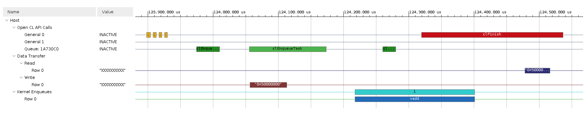

2020.2 Vitis™ Getting Started TutorialSee 2020.1 Tutorials |
Vitis Flow 101 – Part 5 : Visualizing Results and Analyzing Reports¶
Now that you successfully built and ran the vector-add example, let’s look at the results and reports generated along the way.
Locating the Run Summary¶
If you look into the directory where you ran the application, you will notice that a few files were generated by the run:
opencl_summary.csv
opencl_trace.csv
vadd.xclbin.run_summary
NOTE: If you targeted the ZCU102 hardware, these files are stored on the SD card and you need to copy them back to your workstation to continue this lab.
The generation of these files and reports is controlled by runtime options located in the xrt.ini file. This tutorial contains a pre-existing xrt.ini file which enables the generation of profile data and a timeline of execution with the following content:
[Debug]
opencl_summary=true
opencl_trace=true
Opening the Run Summary with Vitis Analyzer¶
This example is configured to generate run summaries for all three build targets (software emulation, hardware emulation and hardware). Any of these runs can be analyzed using the steps described below. The results will be different depending on the results you open. The hardware run is fully accurate, hardware emulation is a cycle-approximate simulation and software emulation should only be used for functional considerations. Also, since the U200 and ZCU102 cards have different characteristics, the results will be different between these two targets. The screenshot shown below is from the hardware run on the U200 card.
Run the following command from the run directory containing the results you want to analyze:
vitis_analyzer ./vadd.xclbin.run_summary
This opens the Vitis Analyzer tool and loads the various reports and displays the run summary. You can navigate to the various reports using the left pane of the Vitis Analyzer or by clicking on the links provided in the run summary.
Open the System Diagram.
The System Diagram is a graphical view of the contents of the Xilinx device. It shows the various hardware accelerators, how they are connected to platform resources such a global memory banks.
Notice the profiling information displayed next to the vadd hardware accelerator.
Click on the “Settings” icon located in the top right corner of the diagram and check the “Show Profile Info” box. Notice that the diagram now displays the mapping of kernel arguments to kernel ports and shows bandwidth information for each port.
Click on each of the three tabs (Compute Units, Kernels and Memories) located at the bottom of the diagram and look at the information displayed in each of them.
Open the Run Guidance report
The Guidance report flags suboptimalities in your application and provides actionable feedback on how to improve it.
This simple example is not fully optimized and Guidance reports several warnings. Inspect each of these warnings to learn more about optimization opportunities and design best practices.
What can you learn about the width of the kernel ports?
Open the Profile Summary report
The Profile Summary provides annotated details regarding the overall application performance. All data generated during the execution of the application is grouped into categories.
Use the left pane of the report to navigate through the various categories and explore all the metrics reported in the Profile Summary.
Open the Application Timeline
The Application Timeline collects displays host and kernel events on a common timeline to help visualize the overall health and performance of your system. The graphical representation is very useful to see issues regarding kernel synchronization and efficient concurrent execution.
Zoom in and scroll to the far right of the timeline trace to visualize the point where the host program transfers the buffers and executes of the kernel.
Mouse over the various activity events to get more details about each of them.
Can you relate the timeline activity to the sequence of API calls in the
host.cppfile?

When you are done exploring the various reports in Vitis Analyzer, you can close the tool.
Homework¶
Now that you have learned the basics of the Vitis flow, you can try some experiments on your own. A good place to start is to try making changes to the host program. If you only change the host.cpp file, then you do not need to rebuild the FPGA binary, which makes for very quick build-and-run iterations.
In the host program, the size of the vectors is hardcoded to 4096 elements (through the DATA_SIZE macro).
What happens if you increase this size to a much larger value?
What do you see in Vitis Analyzer?
The host program only calls the accelerator once.
What happens if you put a loop around Step 4 in
host.cppto iterate a few more times?How does the Application Timeline trace now look like?
Now can you make it so that the programs sends different vectors to the accelerator each time it calls it?
Wrap-Up and Next Steps¶
Congratulations for completing the Vitis Flow 101 tutorial. You should now have an understanding of all the essential concepts of the Vitis programming and execution model, including coding considerations and how to build, run and visualize reports.
The vector-add example is as simple as it gets, yet it offers a lot to learn and it is a very good sandbox to dig deeper into key aspects of the flow. The Get Moving with Alveo tutorial leverages the same vector-add example and takes it several steps further by illustrating common optimization techniques. Be sure to check it out.
Return to the Vitis Tutorials home page.
Copyright© 2020-2021 Xilinx